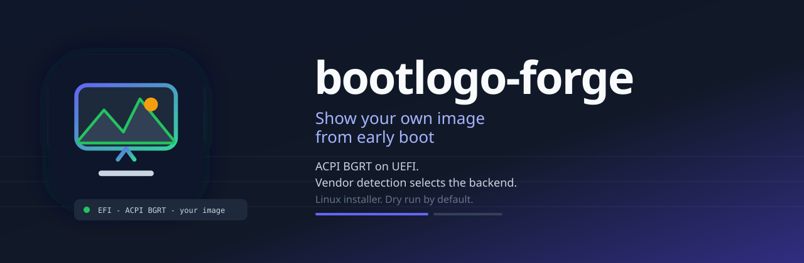

bootlogo-forge
Replace the boot logo after POST with your own image on EFI systems using ACPI BGRT.
bootlogo-forge detect sudo bootlogo-forge install --image ./logo.png --plymouth --apply sudo bootlogo-forge uninstall --apply
See the repository for build and safety details.